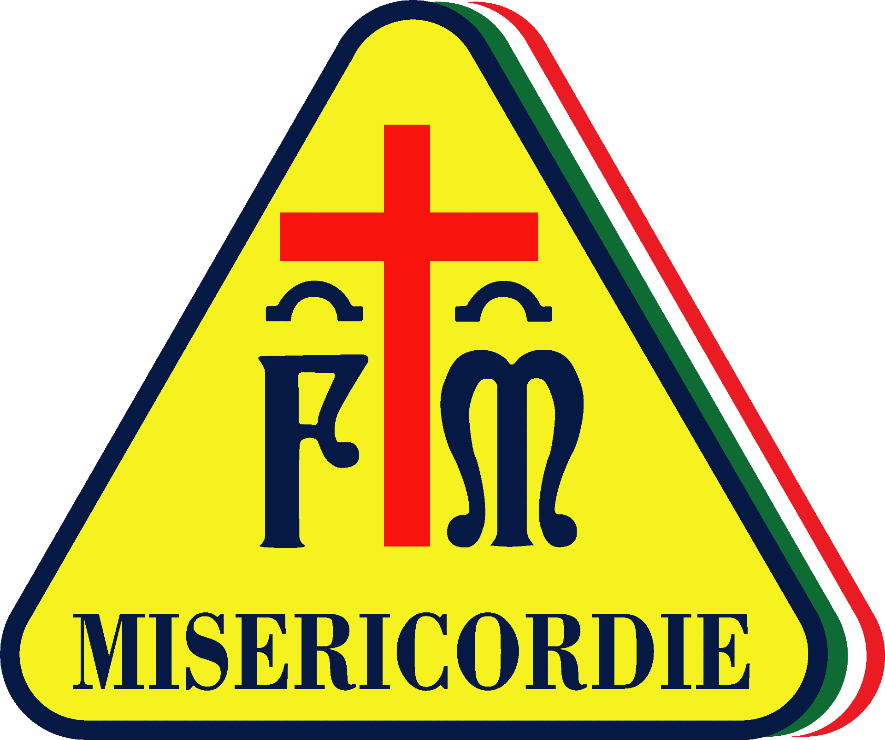

Esperienza
Ho fatto volontariato per la Misericordia di Scandicci durante gli ultimi mesi, ho seguito e terminato un corso per diventare soccorritore.
Ho fatto volontariato per la Misericordia di Scandicci durante gli ultimi mesi, ho seguito e terminato un corso per diventare soccorritore.